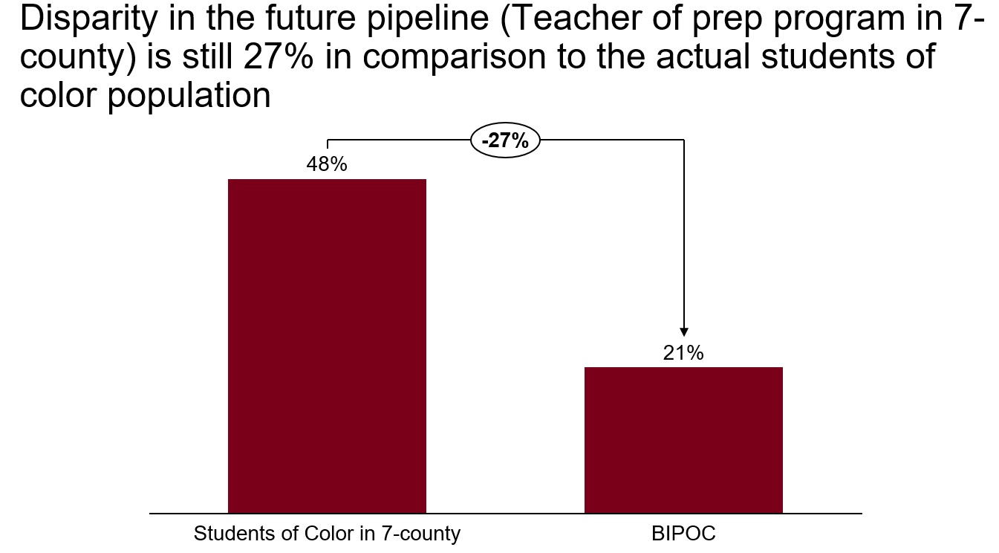

Hi There, welcome to my portfolio page, here you are going to find my Data Science Projects.
On this page, I showcase how I approach and solve different business problems applying data science/data analytics techniques utilizing public data.
Additionally, you will find my professional experience, capabilities and other tools and concepts revolve around Data Science.
Do not hesitate to contact me.
I appreciate your time visiting my page.
About me
My name is Thiago Nunes
I'm a STEM MBA Full-time Candidate in a top-tier Business School in the United States, focusing on Strategy and Dada Analytics
I am a professional with +5 years in the CPG and Food and Beverage industry. Skilled in selling and deploying complex solutions for decreasing operational costs and assisting Fortune 500 companies to produce more sustainably and increasing profitability.
Customer-centric, strong analytical, and structured approach to breakdown complex problems is part of my professional toolkit.
I am a data enthusiast and I am studying Data Science parallelly to my MBA, I am seeking positions where I can apply my Business know-how and Data Science techniques to enhance the business decision-making process.
'In God we trust, all others must bring data." - Deming
Stats & Machine Learning
• Exploratory Analyses and Descriptive Stats
• RapidMiner and Algorithms (K-nn, Decision Tree, Random Forest,Logistic Regression, Gradient Boosted Trees)
• Performance Metrics (Confusion Matrix, RMSE, MAE, MAPE, Precision, Recall, Lift)
Programming and SQL
• SQL - basics
• Python focused on Data Anlytics and Data Science)
• R Studio - Basics
Data Visualization
• Tableau
• Excel
• RapidMiner

Teacher Workforce Landscape Analysis in Minnesota - How to increase diversity
Leveraging public data from the Minnesota Department of Education to build a Map and come up some insights for policy makers
Tools
- Microsoft Excel
- Exploratory Analysis
- Tableau
- PPT

Nulla amet dolore
Aenean ornare velit lacus, ac varius enim lorem ullamcorper dolore. Proin aliquam facilisis ante interdum. Sed nulla amet lorem feugiat tempus aliquam.
Tools
- Microsoft Excel
- Tableau
- PPT
Contact Information
Feel free to contact me
Linkedin: https://www.linkedin.com/in/thiagoonunes/
E-mail: nunes045@umn.edu